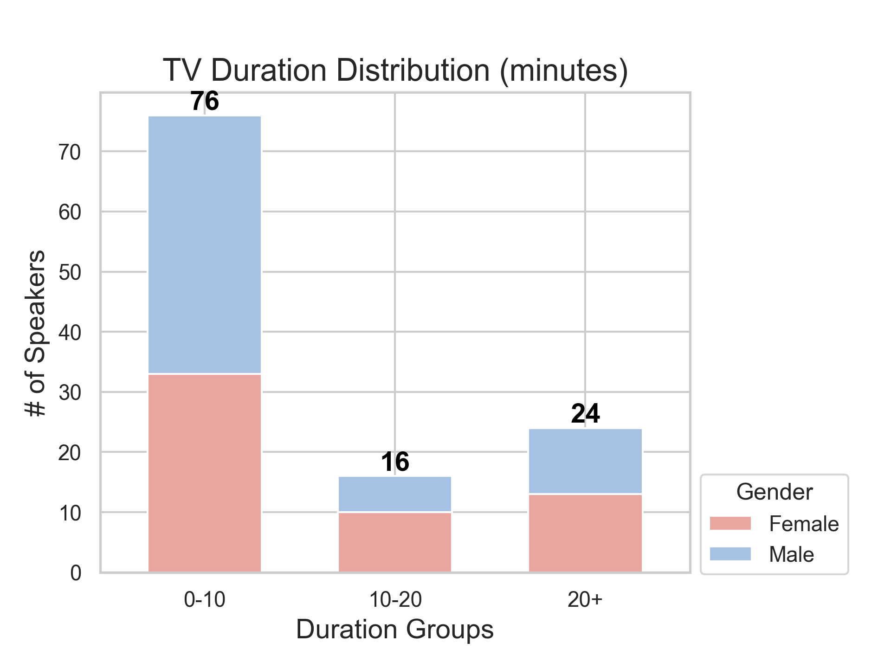

TMCSPEECH: A Chinese TV and Movie Speech
Dataset with Character Descriptions and a Character-Based Voice
Generation Model
Abstract
Recent research on text-guided speech synthesis has sparked considerable interest. This study explores the
potential of leveraging publicly available internet video data for speech synthesis and character-based
voice generation. We introduce a multi-modal extraction pipeline for automating the creation of speech
synthesis datasets, extracting accurate character speech segments and descriptions from online videos.
Additionally, we propose a person-description-based controllable voice synthesis system, establishing a
mapping from character descriptions to speaker representation vectors. This system transforms character
descriptions into new vectors, serving as input for zero-shot VITS to generate character-specific voices.
Both objective and subjective metrics affirm our approach's capability to generate previously unheard
character-specific voices with acceptable naturalness. We will release the TMCSPEECH dataset generated by
this pipeline. Our dataset and audio samples can be accessed online https://raydonld.github.io/TMCSPEECH/ .
Overview
The overview of our multi-modal extraction pipeline
The architecture of our model
The TMCSPEECH dataset [v1]
We have successfully collected 783 movies and 3 TV shows from YouTube, and have utilized our proposed
multi-modal extraction pipeline for data extraction. We plan to continue expanding this dataset. We will make
the TMCSPEECH dataset[v1] available upon the acceptance of our paper at ICME 2024. The dataset contains the
following statistics and samples:
Dataset Statistics
Number of Speakers
Duration (min)
Gender Ratio (Male/Female)
Movies
2032
10019.88
2.63
TV Shows
116
1706.16
1.07

Dataset Demo
Video
Type
Video
Name
Character
Name
Character
Description
Text
Audio
Video
Source
Movie
被光抓走的人 Gone With The
Light
武文学 WenxueWu
他是一位四十岁左右的中年男性，体态略显臃肿，身高不算太高，眉头紧锁，给人一种沉稳又忧虑的感觉。他的性格内向，不太善于表达自己的情感，但内心深处却有着强烈的责任感和家庭观念，不断努力着为自己所爱的人创造更美好的生活。
He is a middle-aged man around forty, with a slightly bulky build and average height. His furrowed brow
gives off an air of steadiness mixed with concern. His personality is introverted, not particularly adept
at expressing emotions, but deep inside, he holds a strong sense of responsibility and family values.
Continuously striving, he works hard to create a better life for those he cares about.
那那那些其他班消失的同学呢。
What about the missing kids from the other classes.
Movie
大太监李莲英 Li Lian
Ying,The Imperial Eunch
慈禧 Xi Ci
该角色是一位老年女性，体态丰满，高大而庄重。她的面容严肃，眼神犀利，让人不敢直视。她的性格冷酷无情，善于权谋，常常令人无法琢磨。她是清朝末期的重要人物，手握大权，对人民命运具有巨大影响。
This character is an elderly woman with a full figure, tall and dignified. Her countenance is stern, and
her gaze is sharp, making people hesitant to meet her eyes. Her personality is ruthless and adept at
political maneuvering, often leaving others unable to fathom her intentions. She is a significant figure
during the late Qing Dynasty, holding considerable power and wielding a profound influence over the
destiny of the people.
那个隔辈的人再把同治皇后请出来垂帘听政。
The person of the next generation then invited the Empress Dowager Tongzhi to come out and rule by means
of a curtain.
Movie
大太监李莲英 Li Lian
Ying,The Imperial Eunch
李莲英 Lianying Li
该角色是一位年约五十的中年男性，身材高大健硕，面容深邃，浓密的眉毛下是一双犀利的眼睛。他性格沉稳，深沉内敛，不轻易表露情感。身为太监，他看惯了宫廷斗争，善于察言观色，处理事务圆滑得体，深受皇室信任。
This character is a middle-aged man around fifty, with a tall and robust stature. His face is deep-set,
and beneath thick eyebrows lie sharp eyes. He possesses a composed and reserved personality, rarely
revealing his emotions. As a eunuch, he is accustomed to the intrigues of the court, adept at
understanding words and observing expressions. Skillful in handling affairs smoothly and gracefully, he
has earned the trust of the royal family.
太后的意思是要把这个山海好好修上一修。
The empress dowager means to repair this Shanhai well.
TV Show
琅琊榜 Nirvana in Fire
梅长苏 Changsu Mei
他是一位年约三十的男性，身姿修长，清瘦而不失力量。他的眼眸深邃如海，透出沉稳与智慧。他的性格既冷静又坚韧，善于谋划，能屈能伸。他的外表看似文弱，但实则蕴藏着强大的内心力量。
He is a man around thirty, with a slender and lean figure that still carries strength. His eyes are deep,
akin to the sea, revealing a sense of calmness and wisdom. His personality is both composed and resilient,
adept at planning and adaptable to circumstances. While his outward appearance may seem delicate, it
conceals a powerful inner strength.
皇上一定会征询殿下的意见。
The emperor will definitely seek your advice.
TV Show
甄嬛传 Empresses in the
Palace
甄嬛 Huan Zhen
她是一位年轻的女性，身材苗条，容貌秀美。她的眼神明亮而犀利，透露出内心的聪慧和坚定。她的性格既温婉又坚强，善于应对各种宫廷斗争。在年轻的岁月里，她以她的美貌和智慧，成为了宫廷中一颗璀璨的明珠。
She is a young woman, slim and beautiful. Her eyes are bright and sharp, revealing inner intelligence and
determination. Her personality is both gentle and strong, adept at dealing with various court intrigues.
In her youthful years, she became a radiant pearl in the court, recognized for her beauty and
intelligence.
臣妾情愿自己受这个委屈。
I would rather suffer this grievance myself.
Demo Samples
1. Training Data for the Prompt Encoder and the Normalizing Flow Model
Video
Name
Character
Name
Character
Description
Samples
被光抓走的人 Gone With
The
Light
武文学 WenxueWu
他是一位四十岁左右的中年男性，体态略显臃肿，身高不算太高，眉头紧锁，给人一种沉稳又忧虑的感觉。他的性格内向，不太善于表达自己的情感，但内心深处却有着强烈的责任感和家庭观念，不断努力着为自己所爱的人创造更美好的生活。 He
is a middle-aged man around forty, with a slightly bulky build and average height. His furrowed brow
gives off an air of steadiness mixed with concern. His personality is introverted, not particularly
adept at expressing emotions, but deep inside, he holds a strong sense of responsibility and family
values. Continuously striving, he works hard to create a better life for those he cares about.
那那那些其他班消失的同学呢。 What
about the missing kids from the other classes.
我觉得这个挺不科学的。 I
think it's pretty unscientific.
夫妻互相猜疑嘛。 Couples
are suspicious of each other.
你们夫妻不也都留下了嘛。 You
and your husband stayed, too.
超时空同居 How Long
Will I
Love U
谷小焦 Xiaojiao Gu
她，一个生活在繁华都市中的现代女性，年约三十有余，身材修长而匀称，身高在一米七左右。她的长发如丝般顺滑，眼眸深邃，透露出聪慧与独立。她的穿着时尚而不失优雅，常常以一身简约的黑白配搭亮相。性格上，她独立、自主、有着强烈的自尊心和事业心，对待感情也极为认真和执着。 She
is a modern woman living in the bustling city, around thirty years old, with a slender and
well-proportioned figure, standing at about 1.10 meters tall. Her long hair is smooth as silk, and her
deep gaze reflects intelligence and independence. She dresses in a fashionable yet elegant manner,
often
appearing in simple black and white combinations. In terms of personality, she is independent,
autonomous, with a strong sense of self-esteem and career ambition. She approaches relationships with
seriousness and dedication.
一百平的大草坪啊。 A
hundred square feet of lawn.
你开门是九九年。 It
was 1999 when you opened the door.
我开门是二零一八年。 I
opened the door in 2018.
我实在是没钱租房子了。 I
just can't afford to rent an apartment.
超时空同居 How Long
Will I
Love U
陆鸣 Ming Lu
他是一位年约三十有余的男士，中等身高，身材偏瘦。他的脸庞有着分明的轮廓，双眸深邃而明亮。他的性格内向，略显羞涩，但同时又充满了对未来的期待和探索精神。他总是默默耕耘，为了自己的梦想而奋斗，从不轻易放弃。 He
is a gentleman in his early thirties, of average height, and with a slender build. His face features
distinct contours, and his deep, bright eyes stand out. His personality is introverted, somewhat shy,
but at the same time filled with expectations for the future and a spirit of exploration. He quietly
works towards his dreams, never easily giving up.
那是我自己设计的。 I
designed it myself.
你不怕我揭发你吗? Aren't
you afraid I'll expose you?
今年不九九年吗? Isn't
it 1999?
而且我每天以后我都默念，远离姓谷的女人给未来的我心理暗示。 And
every day from now on, I silently recite, keeping away from women with the surname 'Gu' as a
psychological suggestion for my future self.
春光灿烂猪八戒 Sunny
Piggy
小龙女 Dragon Girl
她是一位年轻的女孩，大约二十多岁，身材修长纤细，身高约为一米七。她有着柔顺的长发和清澈的眼眸，常常穿着轻盈的长裙。她的性格温柔善良，总是关心身边的人，并且有着强烈的正义感。她看起来柔弱，但实际上内心很坚强。 She
is a young girl, around twenty-something, with a slender and graceful figure, standing at about 1.10
meters tall. She has smooth long hair and clear, expressive eyes, often dressed in flowing dresses.
Her
personality is gentle and kind; she is always caring for those around her and possesses a strong sense
of justice. Although she may appear delicate, in reality, she has a resilient inner strength.
明明就是土茯苓加何首乌。 It's
obviously Tuckahoe and Polygonum multiflorum.
我叫小龙女。 My
name is Dragon Girl.
你刚刚怎么没站稳。 You
just lost your footing.
我就什么都知道。 I
know everything.
从你的全世界路过 I
Belonged
to You
陈末 Mo Chen
他是一位年约三十有余的男性，身材修长，微微偏瘦。他的外貌俊朗，眼神深邃，流露出沉稳和从容。他的性格独立而坚韧，善于思考，不轻易表露内心的脆弱。他总是独来独往，但在关键时刻，他也能为了朋友挺身而出，义无反顾。 He
is a man in his early thirties, with a slender and slightly lean physique. His handsome appearance,
deep
gaze, and composed demeanor give off an air of calmness. His personality is independent and resilient,
adept at contemplation without easily revealing inner vulnerability. He tends to be solitary, yet in
crucial moments, he can step forward for friends without hesitation, displaying unwavering loyalty.
这是我表弟叫茅十八。 This
is my cousin named MAO Eighteen.
你觉得你这个怀疑有道理吗？ Do
you think your suspicion is justified?
看这位女子颧骨突出。 Look
at this woman with prominent cheekbones.
如果你在生活当中做了一个错误的决定。 If
you make a bad decision in your life.
从你的全世界路过 I
Belonged
to You
幺鸡 Ji Yao
一位娇小纤细的女性，年龄大约在二十五岁左右，身高不太高，给人一种柔弱的感觉。她的性格比较内向，但又不失坚强和独立，总是默默地为自己和身边的人付出。她的外貌清秀可人，长发披肩，眼神中透着一股温柔和善良。 A
petite and slender woman, approximately around twenty-five years old, with a not-so-tall stature,
giving
off a delicate impression. Her personality is rather introverted but not lacking in strength and
independence; she silently sacrifices for herself and those around her. With a charming appearance,
shoulder-length hair, and eyes that radiate gentleness and kindness, she is a quietly amiable
presence.
三十二岁都已经半截入土了。 "I
am only thirty-two years old, but I feel like half of my life is already over."
就因为你一天到晚瞎琢磨。 Because
you've been thinking about it all day.
世界上有趣的事情那么多。 There
are so many interesting things in the world.
你知道自己为什么事业不成功吗？ Do
you know why you haven't been successful in your career?
大太监李莲英 Li Lian
Ying,The Imperial Eunch
慈禧 Xi Ci
该角色是一位老年女性，体态丰满，高大而庄重。她的面容严肃，眼神犀利，让人不敢直视。她的性格冷酷无情，善于权谋，常常令人无法琢磨。她是清朝末期的重要人物，手握大权，对人民命运具有巨大影响。 This
character is an elderly woman with a full figure, tall and dignified. Her countenance is stern, and
her
gaze is sharp, making people hesitant to meet her eyes. Her personality is ruthless and adept at
political maneuvering, often leaving others unable to fathom her intentions. She is a significant
figure
during the late Qing Dynasty, holding considerable power and wielding a profound influence over the
destiny of the people.
亲政不也得十好几年以后。 Direct
governance will also take more than ten years.
这天下又这么兵荒马乱。 There's
so much chaos in the world.
那个隔辈的人再把同治皇后请出来垂帘听政。 The
person of the next generation then invited the Empress Dowager Tongzhi to come out and rule
by means of a curtain.
我希望新皇帝能像同治皇帝活着的时候一样。 I
hope the new emperor will be like the Tongzhi Emperor when he was alive.
大太监李莲英 Li Lian
Ying,The Imperial Eunch
李莲英 Lianying Li
该角色是一位年约五十的中年男性，身材高大健硕，面容深邃，浓密的眉毛下是一双犀利的眼睛。他性格沉稳，深沉内敛，不轻易表露情感。身为太监，他看惯了宫廷斗争，善于察言观色，处理事务圆滑得体，深受皇室信任。 This
character is a middle-aged man around fifty, with a tall and robust stature. His face is deep-set, and
beneath thick eyebrows lie sharp eyes. He possesses a composed and reserved personality, rarely
revealing his emotions. As a eunuch, he is accustomed to the intrigues of the court, adept at
understanding words and observing expressions. Skillful in handling affairs smoothly and gracefully,
he
has earned the trust of the royal family.
太后的意思是要把这个山海好好修上一修。 The
empress dowager means to repair this Shanhai well.
从小处说奴才可以为您再尽这份孝心。 From
a small point of view, the slave can do this filial piety for you again.
大婚之后呢就得亲政。 After
the grand wedding, it will be time for direct governance.
这次派我随七爷来北洋水师。 This
time, I was assigned to accompany Seventh Prince to the Beiyang Fleet.
独行月球 Moon Man
马蓝星 Lanxing Ma
这位女性角色年约三十余岁，身材修长，身高约一百七十厘米。她剪着短发，显得干练利落。她的性格坚韧不拔，冷静沉着，善于应对各种复杂情况。她是一位极具领导才能的探险家，不畏艰难险阻，勇往直前，带领团队向未知领域进发。 This
female character is in her early thirties, with a slender and tall figure, standing at approximately
170
centimeters. She sports a short haircut, giving her a sharp and practical appearance. Her personality
is
tenacious, calm, and adept at handling complex situations. She is an adventurous leader with
exceptional
leadership skills, unafraid of difficulties and obstacles. Fearlessly, she leads her team forward into
unknown territories.
地球的科技水平倒退成这样。 The
technological level of the earth has gone backwards.
通过月面地标跟踪独孤月的行车路线。 Track
Dugu Yue's driving path through lunar landmarks.
确保独孤月和探月狗能够相遇。 Make
sure Dugu Yue and the moon-exploring dog can meet.
宇航服的户外活动时间是五个小时。 The
suit's outdoor activity time is five hours.
飞驰人生 Pegasus
张驰 Chi Zhang
他是一位年约四十的中年男性，高大而健壮，肌肉结实，身材修长，留着一头短发。他的面容棱角分明，目光锐利，透露出一种不屈的精神。他有着坚毅的性格，面对困难从不轻易放弃，而是顽强地奋斗，不断超越自我。 He
is a middle-aged man around forty, tall and robust, with well-defined muscles and a tall and sturdy
physique. His short hair complements his strong and determined appearance. His facial features are
sharp, and his gaze is piercing, reflecting an indomitable spirit. With a resolute personality, he
never
easily gives up in the face of challenges. Instead, he tenaciously fights on, constantly pushing
himself
to surpass his own limits.
会破坏极限状态的汽车平衡。 It
disrupts the balance of the car in its limit state.
大家不要原谅我。 Don't
forgive me.
有什么问题吗。 What's
the problem?
不留下吃口饭。 Not
staying to eat.
甲方乙方 The Dream
Factory
姚远 Yuan Yao
他是一位年约四十的中年男性，身材高大健硕，微微有些发福。他的面庞棱角分明，一双深邃的眼睛透露出沉稳和睿智。他的性格温和而坚毅，总是能在困难面前保持冷静，并以其超凡的智慧和经验解决问题。他是一个值得信赖和依靠的人。 He
is a middle-aged man around forty, with a tall and robust stature, slightly showing signs of
robustness.
His face has well-defined features, and a pair of deep eyes exude a sense of calmness and wisdom. His
personality is gentle yet resolute, always maintaining composure in the face of challenges. With
extraordinary intelligence and experience, he adeptly solves problems. He is someone reliable and
trustworthy, worthy of reliance and dependence.
我猜您一定是一位训练有素的记者。 I
suppose you must be a trained journalist.
然后连夜审讯逼供，严刑拷打。 Then
they would conduct interrogation and torture the suspects overnight.
把别人的欢乐建筑在自己的痛苦之上的工作，是把爱和欢乐传播到人间的天使。 The
work of building the joy of others over one's own pain is the angel who spreads love and joy
to the world.
知道这受气的滋味不好受。 I
know it's not easy to be treated like this.
2. Experimental Results
In our approach, you can input both the name of video and character, as well as generate voices using
character descriptions.
Video
Name
Character
Name
Character
Description
Text
Generated
Voice-1
Generated
Voice-2
Generated
Voice-3
Generated
Voice-4
两宫皇太后 Two
dowagers
慈禧皇太后 Empress
Dowager
Cixi
该角色是一位年约五十余岁的女性，身材高大而端庄，体态丰满。她的面容严肃，有着锐利的眼神和紧闭的嘴唇，显示出她内向且权威的性格。她的长发被梳成了一个复杂的发髻，珠宝和华丽的服饰更突显了她的高贵和威严。 This
character is a woman of around fifty years old, with a tall and dignified stature, and a full figure.
Her countenance is solemn, with sharp eyes and tightly closed lips, revealing an introverted and
authoritative personality. Her long hair is styled into an intricate updo, and the jewelry and
luxurious
attire further emphasize her nobility and dignity.
我早就说过这内廷是得整治一下。 I have said that the internal court should be rectified.
两宫皇太后 Two
dowagers
嘉顺皇后 Empress
Jiashun
她是一位年约四十的女性，身姿高挑修长，微胖的体型透出一种雍容华贵的气质。她的面容端庄秀丽，双眸深邃明亮，透露出沉稳而又聪慧的性格特点。她的手指纤细，轻轻扶着华丽的凤冠，流露出母仪天下的威严和庄重。 She
is a woman around forty, with a tall and slender figure, and a slightly plump physique exuding an air
of
grace and elegance. Her countenance is dignified and beautiful, with deep and bright eyes reflecting a
calm and intelligent character. Her fingers are delicate, gently supporting an ornate phoenix crown,
emanating an imposing and solemn maternal authority.
不过可别让皇上累坏了身子。 But don't let the emperor wear himself out.
杨门女将之军令如山 Legendary
Amazons
穆桂英 Guiying Mu
她是一位年约三十的女性，身姿高大挺拔，体态修长而不失力量，身高约在一米七左右。她的外貌清秀端庄，眉眼间透着一股英气，让人不禁肃然起敬。她性格坚毅果敢，善于领兵作战，遇到困难总能镇定应对，是众人心中的楷模。 She
is a woman around thirty, tall and upright, with a well-proportioned and powerful physique, standing
at
about 1.7 meters tall. Her appearance is elegant and dignified, with a noble air in her brows and
eyes,
evoking a sense of respect. Her personality is resolute and decisive, adept at leading troops into
battle. In the face of difficulties, she always remains calm and composed, serving as a role model in
the hearts of many.
将军队化整为零。 Turn the military into pieces.
小时代 Tiny Times
1.0
林萧 Xiao Lin
她，一位年约二十五岁的女性，身姿纤细轻盈，身高约一百六十五厘米。她的长发如丝般顺滑，眼眸宛如深邃的湖泊。性格上，她是个温柔善良的女孩，略带一丝忧郁的气质。她的外表看似柔弱，但内心充满了坚韧和勇气，面对困难从不轻易放弃。 She
is a woman around twenty-five, with a slender and graceful figure, standing at about 165 centimeters
tall. Her long hair is as smooth as silk, and her eyes resemble deep, serene lakes. In terms of
personality, she is a gentle and kind girl, with a hint of melancholy in her demeanor. Despite her
seemingly delicate appearance, her heart is filled with resilience and courage, and she never easily
gives up in the face of difficulties.
我反而从心底理解南湘了。 On the contrary, I understood Nanxiang from the bottom of my heart.
车在囧途 The
Unfortunate
Car
严小莲 Xiaolian Yan
这位女性角色年约三十，身材苗条，身高适中。她的长发披肩，眼眸中透出一股聪慧和机巧。性格上，她是个活泼开朗的人，善于应对各种突发状况，同时也是个有责任心的人，对待自己的任务总是尽心尽力，不轻言放弃。 This
female character is around thirty, with a slender and well-proportioned figure, of moderate height.
Her
shoulder-length hair and bright eyes reveal a sense of cleverness and intelligence. Personality-wise,
she is a lively and cheerful individual, adept at handling various unexpected situations.
Additionally,
she is a responsible person, always dedicating herself wholeheartedly to her tasks and not easily
giving
up.
你就在我们这安家吧。 You can make your home here with us.
澳门风云 The Man from
Macau
石一坚 Yijian Shi
他是一个高大挺拔的中年男性，身姿矫健，精神矍铄。岁月并未在他的脸上留下痕迹，反而增添了一份沉稳和从容。深邃的眼神透露出智慧和自信，微笑时嘴角微微上扬，给人一种亲切而温暖的感觉。他有着坚韧不拔的性格，面对困境总能从容应对。 He
is a tall and upright middle-aged man, with a vigorous and spirited demeanor. Time has not left any
traces on his face; instead, it has added a touch of calmness and composure. The depth in his gaze
reveals wisdom and self-assurance. When he smiles, the corners of his mouth gently curve upward,
imparting a sense of warmth and friendliness. He possesses a resilient character, always able to face
challenges with ease.
你没斗过地主吗？ You have not played against the landlord?
人潮汹涌 End Game
周全 Quan Zhou
他是一个高大而结实的男性，年龄大约在四十岁左右，身高约为一米八。他有一头黑色的短发和浓密的胡须，让他看起来成熟而沉稳。他的性格非常谨慎，总是深思熟虑后才做出决定，同时也是一个非常有责任感的人，对自己的任务和义务非常认真。 He
is a tall and robust male, approximately around forty years old, standing at about 1.8 meters tall.
With
a head of black short hair and a thick beard, he exudes a mature and steady demeanor. His personality
is
highly cautious, always making decisions after careful consideration. Simultaneously, he is a very
responsible individual, taking his tasks and obligations seriously.
听说你跟他挺不错的。 I hear you're pretty good with him.
自定义人物描述 Custom character description
林晓晓 Xiaoxiao Lin
林晓晓大约九岁，是个娇小可爱的女孩。她身材纤细，长发柔顺，眼中闪烁着灵动的光芒。她性格内向但聪明伶俐，喜欢安静地阅读和画画，总是带着甜甜的微笑。 Lin
Xiaoxiao is approximately nine years old, a petite and adorable girl. She has a slender figure, silky
long hair, and her eyes sparkle with lively light. Her personality is introverted but clever, enjoying
quiet moments of reading and drawing. She always carries a sweet smile.
我要去找我的师哥。 I'm going to find my senior martial brother.
自定义人物描述 Custom character description
李阳 Yang Li
李阳是个十岁左右的瘦小男孩，身高刚刚过一米三。他有着一头乌黑的短发和明亮的眼睛，总是好奇地打量着周围。虽然身材瘦小，但他的精力却十分旺盛，性格淘气而善良，总是乐于探索新事物。 Li
Yang is a thin boy around ten years old, just over 1.3 meters tall. He has a head of jet-black short
hair and bright eyes, always curiously observing his surroundings. Despite his small stature, he is
full
of energy, mischievous, and kind-hearted, always eager to explore new things.
我以后要当宇航员。 I want to become an astronaut in the future.